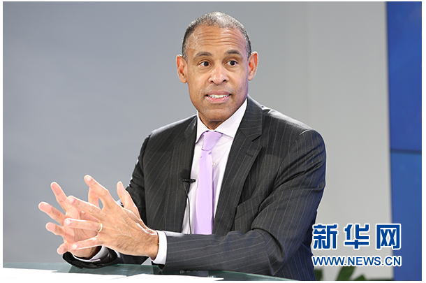

强生：对所有用户负责 让用户对强生产生信任感
2017-04-05 11:38:56 来源: 综合 作者:
新华网北京2月9日电（袁馨晨）“强生倡导的‘健康社会’理念与《“健康中国2030”规划纲要》相符合，强生将持续助力推进健康中国建设。”2月8日，强生全球企业事务副总裁迈克尔·史尼德（Michael Sneed）在接受新华网专访时表示，强生在全球所倡导的‘健康社会’理念和‘健康中国2030’规划同样推崇创新精神。近年来，强生在“因爱而生”公益理念的指导下，取得了可喜成效，未来还将继续助力建设公益中国。
四点发力促进全民健康
2016年10月，《“健康中国2030”规划纲要》发布，提出坚持健康优先、改革创新、科学发展、公平公正的原则，推进健康中国建设。强生作为全球领先的医疗保健企业，自1985年进入中国市场以来，在华耕耘已有三十多个年头。史尼德介绍，目前强生在中国有一万多名员工，分布在90多个城市的不同子公司，“‘健康中国2030’战略规划对于强生中国和企业员工来说意义重大”。

强生全球企业事务副总裁、首席传播官迈克尔·史尼德（Michael Sneed）接受新华网专访
史尼德指出，“首先，强生在全球所倡导的‘健康社会’理念和‘健康中国2030’规划同样推崇创新精神。第二，强生致力于提高公共健康水平。第三，强生持续促进健康领域的学术研究。第四，强生不断增强企业的社会责任意识。通过这四点的全面发展，我们希望能助力推进健康中国建设，努力实现全民健康。”
强生是如何用创新来改善公共健康的？史尼德透露，强生将于今年上半年启动的“健康一代”（Gen H）项目，就是对创新精神的生动展现。“这将是一个全新的项目，关注的是如何让新生代人生活得更健康。我们计划在全球范围内开展这个挑战赛，希望能吸引更多人参加。”史尼德表示，设计这个项目的初衷是为了把更多的创意想法和更好的合作融入到行动当中，探索出一些创新项目，以促进新生代人更加健康地生活。
护士计划项目有助提升护理服务水平
随着我国人口老龄化、新型城镇化提速，国人的健康需求进一步释放，对护理事业发展提出了更高的要求。根据《全国护理事业发展规划（2016-2020年）》，我国将完善护理管理制度，加强护士队伍建设，提高护理服务质量，到2020年，实现护士队伍的数量、素质、能力基本能够适应卫生计生事业发展和人民群众健康需求。
“护士处于护理工作的前沿，未来我们还需要大量的护士，因此，强生把支持护士发展的项目作为企业社会责任活动的一个重点来抓。”史尼德介绍，作为强生“因爱而生”公益活动的重要组成部分，2016年，强生支持有关机构在中国开展了护士计划项目。“在项目执行中，我们发现，人们已经开始更好地意识到护士工作的价值，这对于进一步提升护士的职业荣誉感、鼓励更多人成为护士非常有意义。”史尼德说。
据了解，强生目前已经支持北京大学护理学院等多家国内机构进行护理研究，将来还将继续支持开展相关培训，进一步提高护士业务水平，同时加强护士队伍的能力管理和人才建设。史尼德强调，“强生的护士项目在美国已经开展了15年，我们与很多美国的大型护士机构进行了合作，未来在中国，护士计划项目也会不断延续下去。”
新生儿复苏培训项目覆盖全国94%助产机构
根据中国疾病预防控制中心提供的数据显示，在我国，新生儿窒息的发生率为5%-10%。由于血液供应不足引起大脑缺氧，窒息新生儿容易引发智力残障、脑瘫、癫痫，甚至导致死亡。史尼德介绍，由国家卫生计生委妇幼司牵头、强生全力支持的新生儿复苏培训项目自2004年启动以来，截至目前累计为25万临床医护人员提供了规范化培训，覆盖全国94%新生儿助产机构，每年帮助60万新生儿建立生命的第一口呼吸，挽救了约15万个新生命。
日前，史尼德在北京大学第一医院妇产儿童医院目睹了一场新生儿复苏技能培训。“这个培训项目本身并不需要很复杂的设备或昂贵的经费，更重要的是大量的培训和经常的练习。”他表示。根据2014年的评估结果显示，中国新生儿出生窒息死亡率下降了70%以上，新生儿复苏培训项目在其中起到了较大的推动作用。
史尼德认为，新生儿复苏培训项目体现了强生的价值观，即把一个想法转化为实际的行动，并通过实践最终达到一个有意义的结果。“未来，强生将在中国继续扩大培训范围，持续和医疗机构展开合作。希望通过这种方式，进一步降低因为窒息而引起的婴儿死亡率。”他说。
在史尼德看来，强生积极践行公益，以及企业超过百年的经营历程，都离不开强生“信条”的指引。“2018年，我们的信条将迎来75岁的‘生日’。强生和它的信条是紧密相连的，信条就是强生所肩负的一系列责任。强生相信，应该对所有的服务对象负责，让产品使用者对强生产生信任感。其次，强生也希望对所在的社区和员工负责，为此我们开展了一系列的企业社会责任活动。只有把上述一切都做好的话，公司才能取得长远的发展。”史尼德说。（转自新华网）